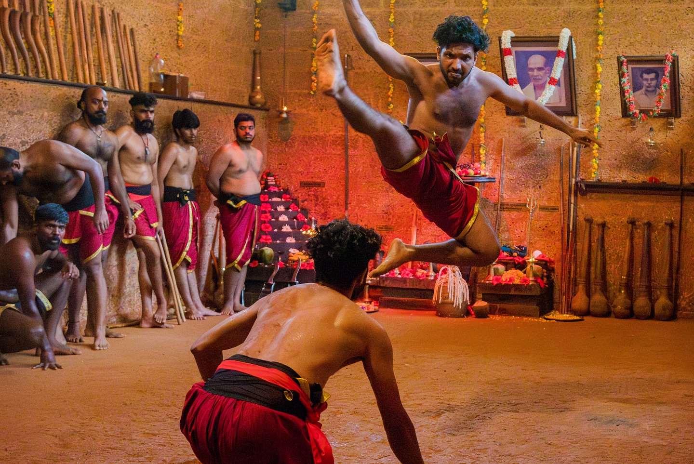
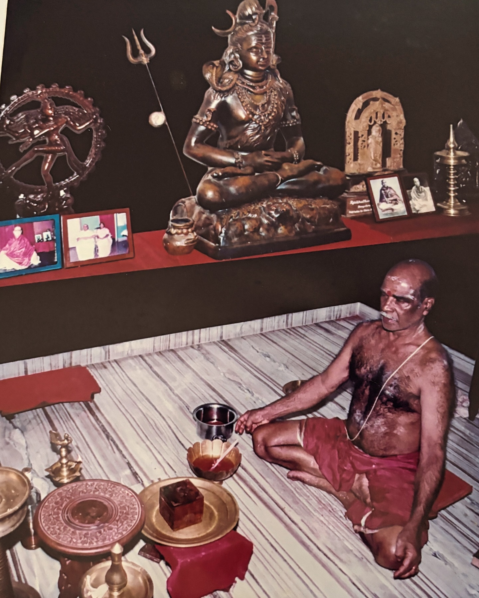
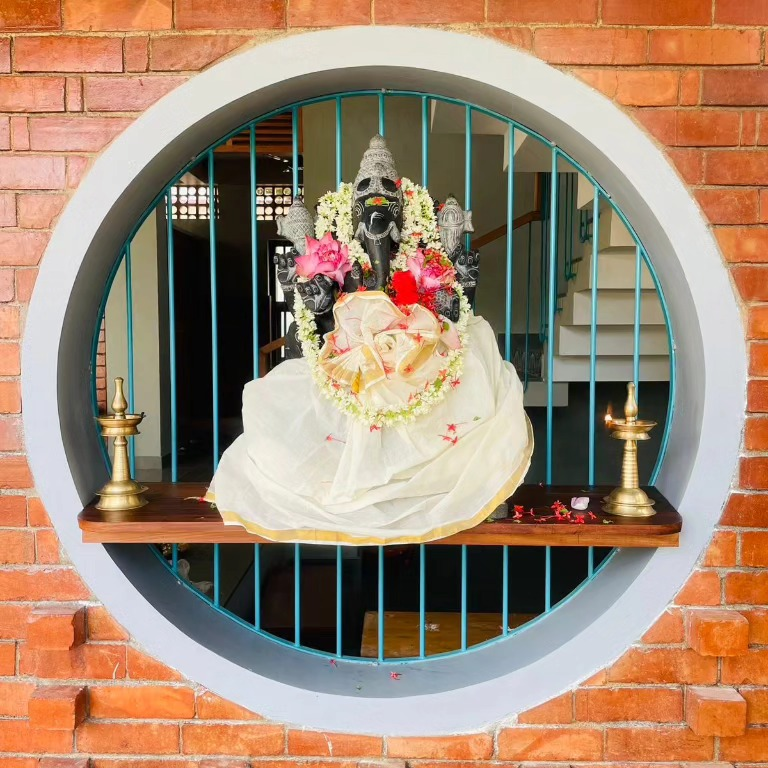
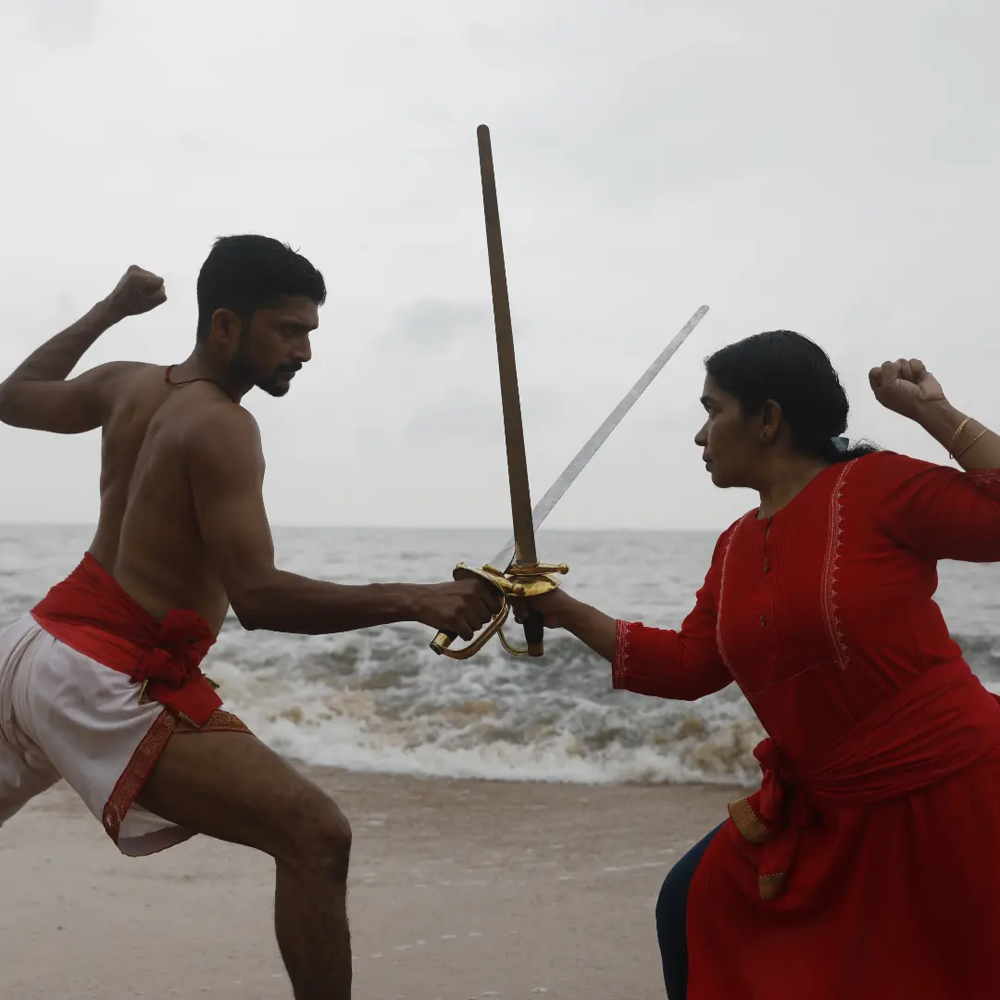
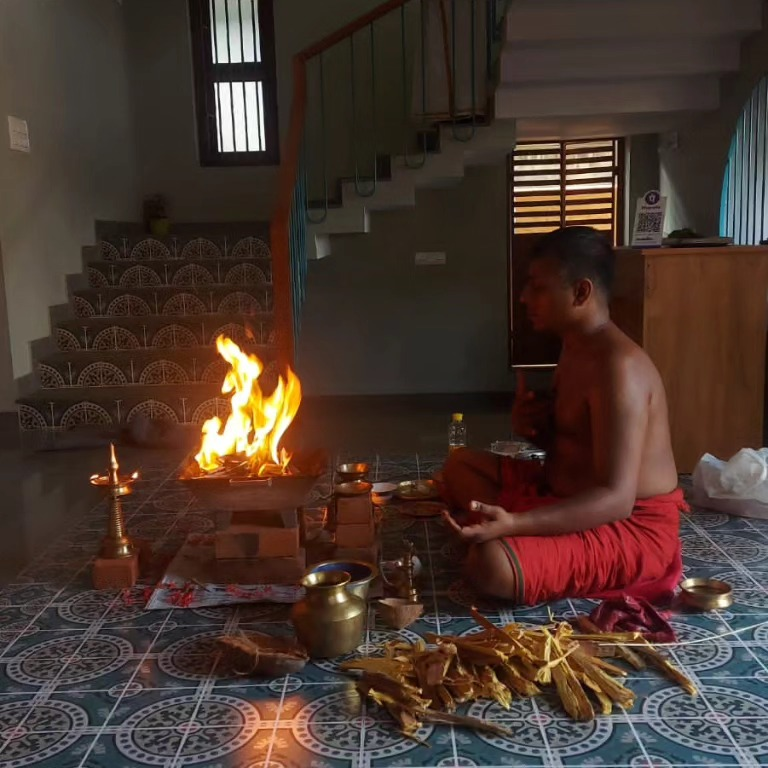

Hindustan Kalari Sangham brand sheet
Working reference for the Phase 1 website. Colours are sampled from the Sangham's own flyers and from photographs of the Kalari pit at Puthiyara.
Emblem

Colour
Maroon #5E0A17Primary. Event flyers.
Oxblood #2E0610Darkest surface.
Laterite #AF6135Kalari pit walls.
Clay #C27A4BEarth floor.
Lamp gold #C39B59On dark only.
Parchment #ECDAB7Raised surface.
Cream #F6EFE2Page background.
Ink #1A0A0CBody text.
Type
Where the warrior's way and the healer's art meet
Rozha One, headings only. Indian Type Foundry.Hindustan Kalari Sangham was founded at Puthiyara, Kozhikode, in 1952 by Veerasree Sami Gurukkal. For more than seven decades it has been a place to train, to heal and to worship.
Hind 400 / 500 / 600, body and interface. Line height 1.7. Join a classPhotography




